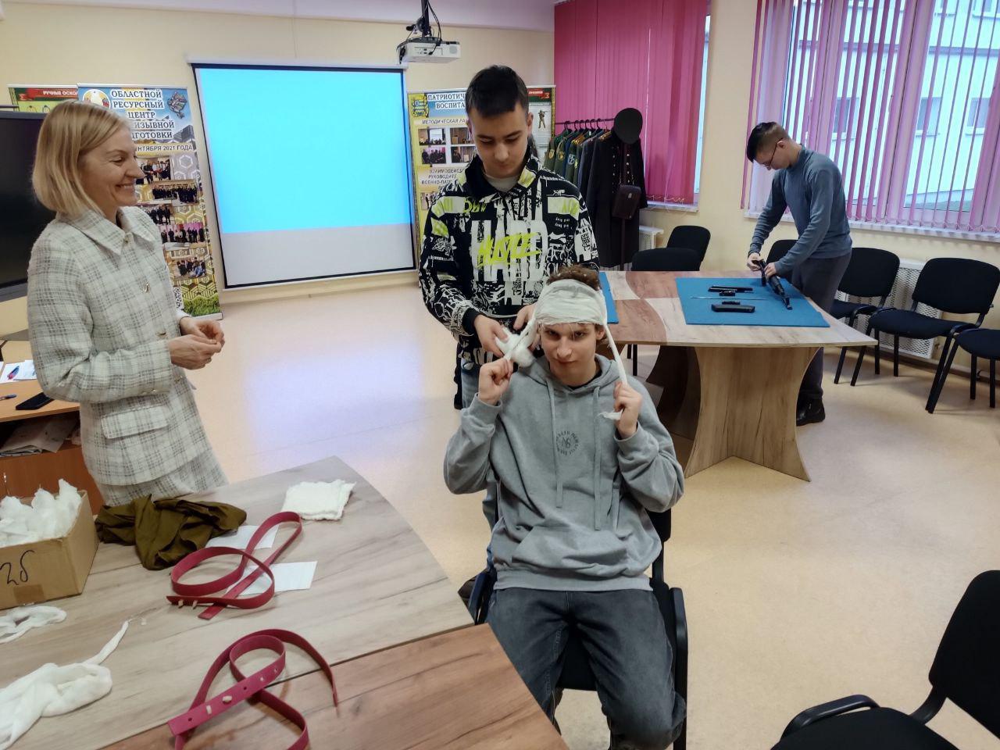
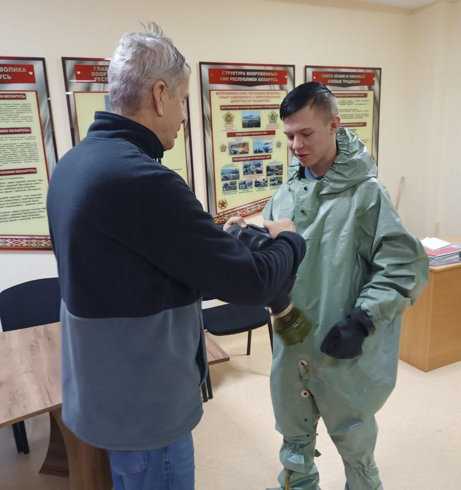
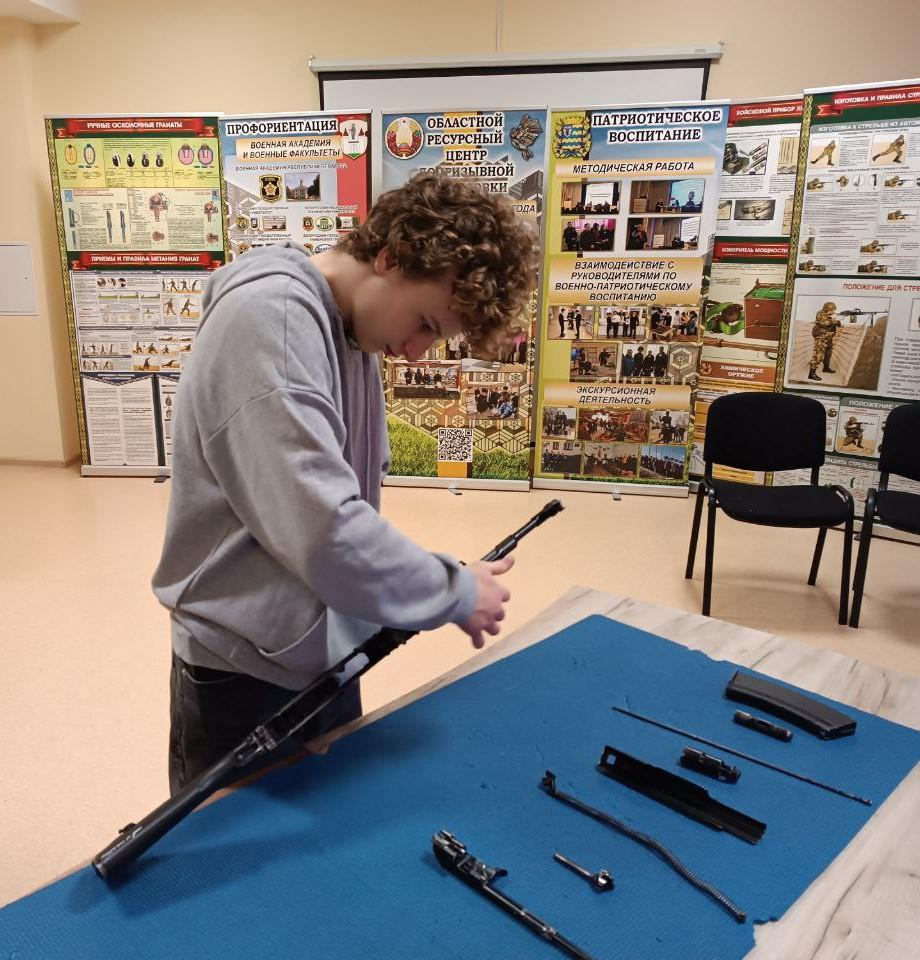
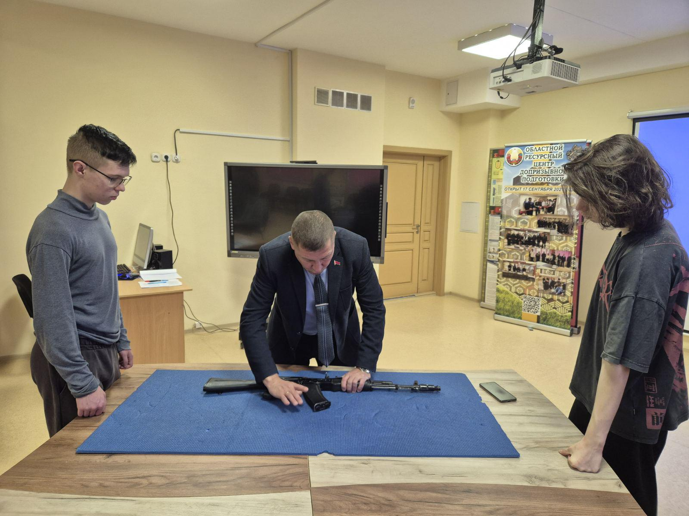
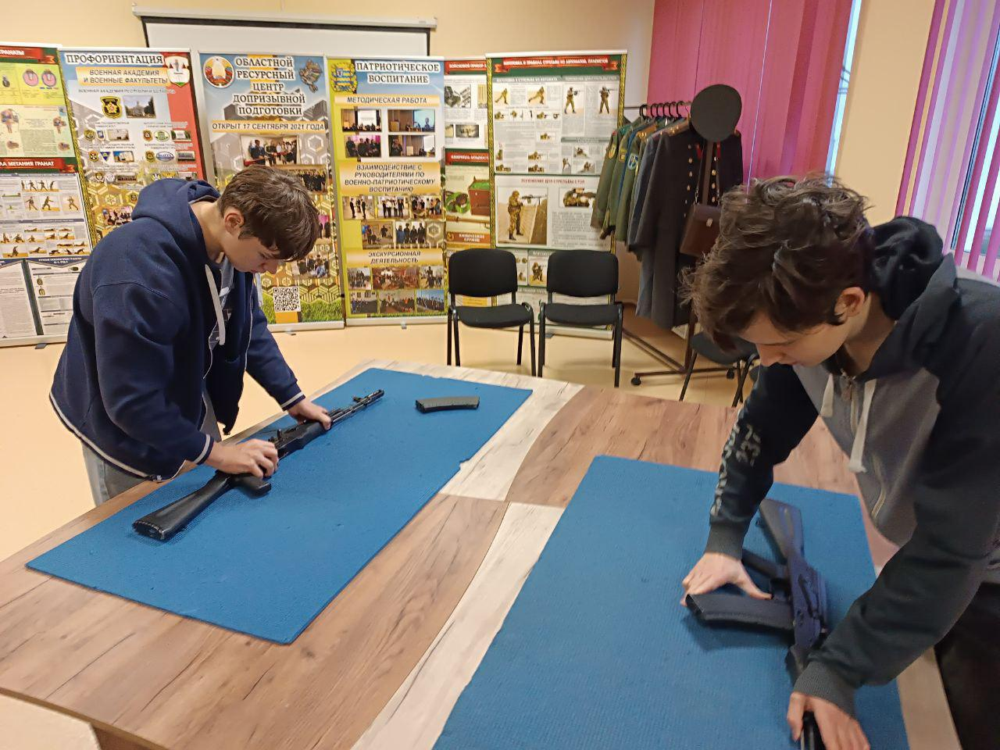

ВОЕННЫЙ ПРАКТИКУМ
6 декабря в центре допризывной подготовки завершилась череда военных практикумов с учащимися 10-х классов. В ходе мероприятий юноши осваивали азы военной службы и общались с военнослужащими воинских частей Борисовского гарнизона. В завершающем мероприятии принял участие преподаватель цикла тактической подготовки 307 гвардейской школы подготовки мотострелковых и десантных подразделений ветеран Вооруженных Сил подполковник в запасе Владимир Сухарев. Владимир Петрович рассказал ребятам об организации тактической подготовки с курсантами учебной воинской части и обучил юношей выполнению нормативов по радиационной, химической и биологической защите.



Кроме того, ребята выполнили нормативы по неполной разборке и сборке автомата Калашникова, оказанию первой помощи при ранениях и травмах, а также выполнили учебные упражнения стрельб из винтовки в интерактивном тире.

